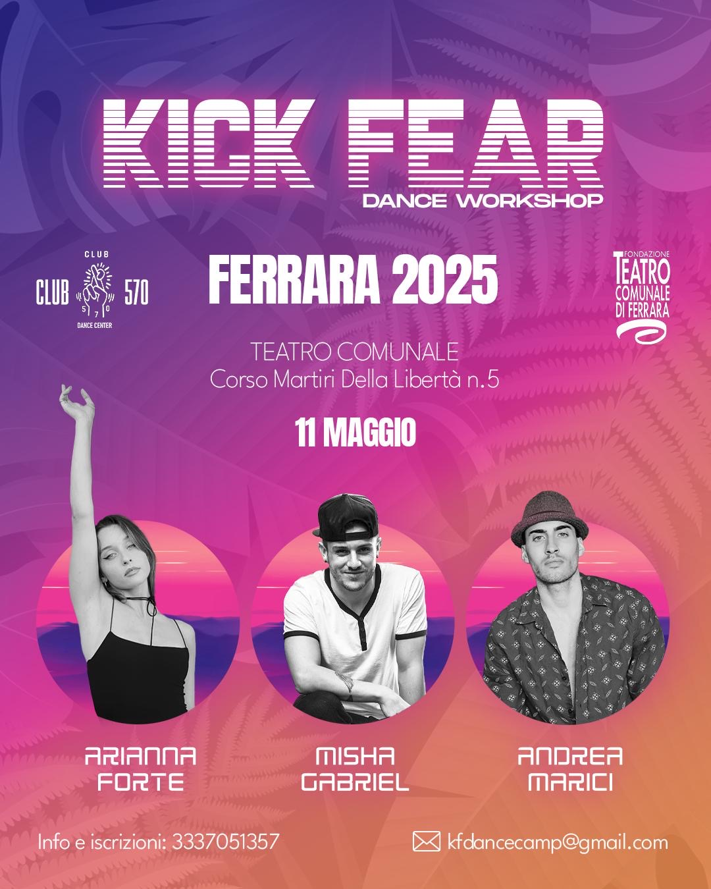
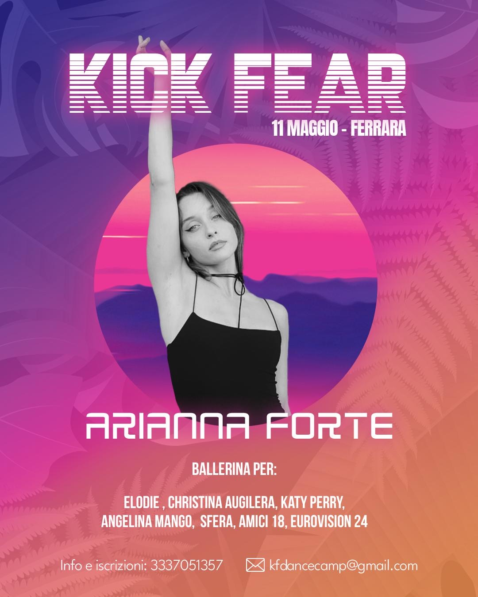
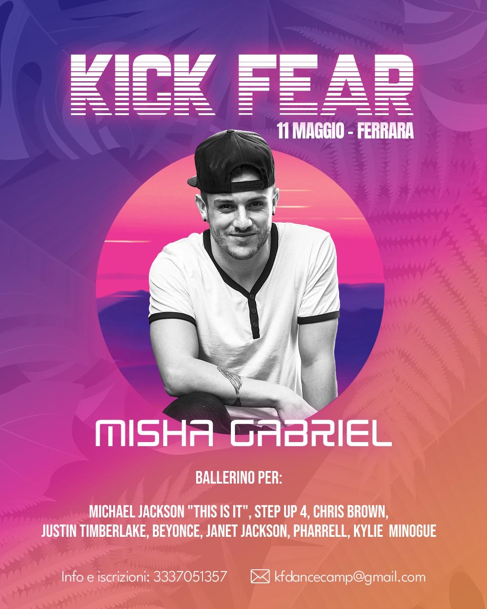
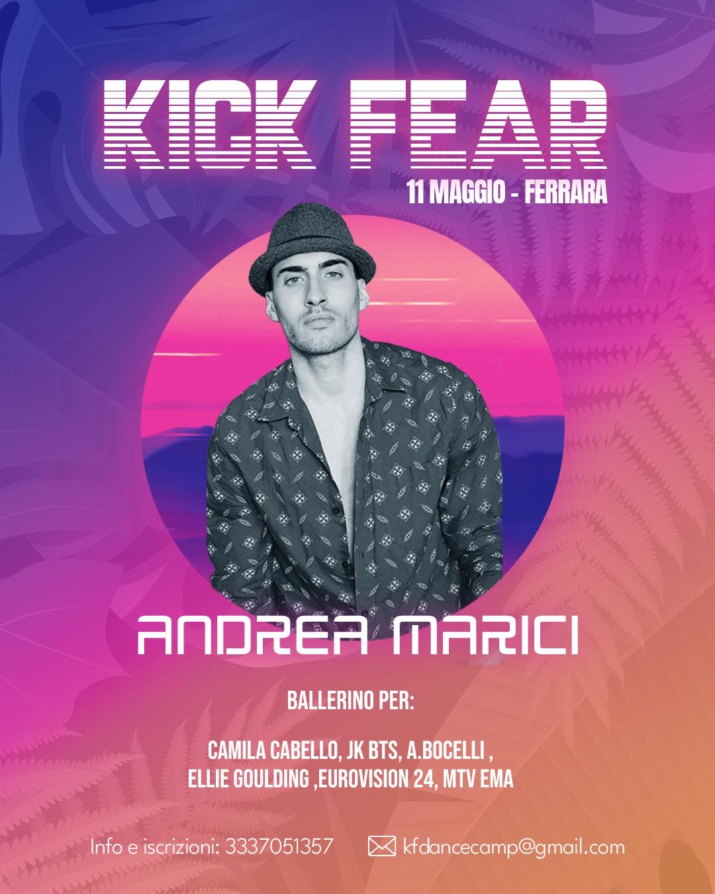

Teatro Comunale di Ferrara (FE)
11 Maggio 2025, inizio ore 13:00
90 Euro pacchetto completo:
3 Lezioni da 1h 30
H 13:00 - 14:30: Arianna Forte
H 15:00 - 16:30: Misha Gabriel
H 16:30 - 18:00: Andrea Marici
Pagamento completo, o versando un acconto di 30€ per riservare il posto e saldare il totale il giorno del workshop in location.
| PAYPAL | kfdancecamp@gmail.com Indicando “KF WORKSHOP NOME E COGNOME” |
| BONIFICO | Intestato a: "CLUB 570 ASD" IBAN: IT78 X030 3213 0000 1000 1076 862 CAUSALE: “KF WORKSHOP NOME E COGNOME” e inviando la ricevuta a kfdancecamp@gmail.com |
Teatro Comunale di Ferrara - Corso Martiri della Libertà, 5
| A piedi | 22 minuti dalla stazione di Ferrara. |
| In macchina | Parcheggi: Kennedy, S. Guglielmo, Borgoricco. |
| In Treno | Regionale Veloce, Bologna-Venezia fermata Ferrara. |
| Tel | 3337051357 |
| kfdancecamp@gmail.com | |
| IG | KFDANCECAMP |